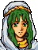
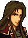
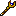

Anterior
 Próximo
Próximo
Próximo

Nome (JP): ファイアーエムブレムトラキア776
Desenvolvedor: Intelligent Systems
Editor: Nintendo
Diretor: Shouzou Kaga
Produtor: Takehiro Izushi
Designer: Shouzou Kaga, Mayumi Hirota
Música: Yuka Tsujiyoko
Plataforma: SNES - 21 de Janeiro de 2000
Wii - 15 de Julho de 2008
Wii U - 10 de Julho de 2013
Fire Emblem Thracia 776 é um rpg japonês tático desenvolvido pela Intelligent Systems e publicado pela Nintendo, é o terceiro e último título lançado para Super Famicon, e também o último da franquia desenvolvido pelo criador da série, Shouzou Kaga.
Fire Emblem Thracia 776 se passa no mesmo lugar e tempo que o "Fire Emblem Genealogy of the Holy War", entre os capítulos 5 e 8. Este Fire Emblem segue a história de Leif, herdeiro de Leonster, no país de Thracia. No ano de 761 no calendário de Grannvale, ocorreu o Massacre Aed, causado pelo país de Thracia, que resultou na morte dos pais de Leif, o reino de Thracia, liderado por Travant, capturou Leonster, entretanto, ele foi imediatamente derrotado pelo império de Grannvale, sendo forçado a ceder ao controle de Friege. Durante o ataque de Thracia, Leif foi resgatado por Finn, que fugiu para o suldeste de Thracia, chegando a pequena vila, Fiana.
Thracia 776, foi o jogo da franquia que introduziu diversas mecânicas novas como a de captura, névoa de guerra, sistema de fuga, sistema de fadiga e capítulos gaiden.
O Sistema de captura permite ao jogador entrar em combate, com os status reduzidos, contra um inimigo, caso derrote-o, capturará a unidade adversária e poderá roubar seus itens. Chefes capturados e soltos, terão uma frase de morte diferente. Inimigos que não possuem armas, como padres, não entrarão em combate, e serão capturados imediatamente.

Junto ao sistema de captura, Thracia 776 também introduziu o sistema de resgate, o qual permite que uma unidade com BLD maior possa carregar unidades com BLD menor que ela. Enquanto carregando, a unidade sofrerá penalidade em todos os status, e a unidade carregada ficará segura do combate, porém caso aquele que está carregando seja derrotado, a unidade carregada será exposta. Montarias e unidades com BLD máxima não podem ser carregados.

Também conhecido como combate noturno, a névoa de guerra é um novo elemento presente em diversos capítulos do jogo, ele escurece todo o mapa, e as unidades poderão ver apenas alguns blocos adjacentes.

Neste sistema, quando uma unidade realiza uma ação, ela receberá vários pontos de fadiga, quando esses pontos são maiores que a saúde máxima da unidade, ela não poderá participar do próximo capítulo. A fadiga resetará caso a unidade não participe do próximo capítulo, ou caso utiliza o drink de stamina.
Esses capítulos são acessados caso o jogador complete certas condições, neles, o jogador poderá adquirir mais itens, experiência para as suas unidades e algum personagem novo.
Leif
Fin
Eyvel
Othin
Halvan
Dagdar
Tanya
Marty
Ronan
Safy
Lifis
Machuya
Brighton
Lara
Fergus
Karin
Dalsin
Asbel
Nanna
Hicks
Shiva
Carrion
Selphina
Cain
Alba
Robert
Fred
Olwen
Mareeta

Salem
Pahn
Troude
Tina
Glade
Dean
Eda
Homer
Linoan
Ralf
Ilios
Sleuf
Misha
Sara

Shannam
Miranda
Xavier
Amalda

Conomor
Delmund
Saias
Ced
Galzus
August

Yubel
Romeo
Coirpre
Lucia
Ishtar
Julius
Manfroy
Hannibal
Doryas
Arion
Trabant
Lewyn
Seliph
Julia
Blume
Altenna
Leidrick
Veld
Galzus

Kempf
Reinhard
Saias
Bovis
Canis
Draco
Mus
Drei
Porcus
Weissman
Bucks
Lobos
Bandol
Truman
Aizenal
Rumei
Gomes
Merlock
Dobalzark
Largo
Oltof
Cullough
Rist
Baldack
Paulus
Makroy
Codha
Aihiman
Zile
Mua
Mueller
Nicolov
Rinecok
Gustav
Wolff
Brook
Palman
Barath
Seimetol
Fraus
Zaom
Cowen
Alfan
Farden
Coruta
| Nome | Ranque | Alcance | Usos | Peso | Força | Acerto | Critico | Preço | Efeitos | |
|---|---|---|---|---|---|---|---|---|---|---|
| Machado de Ferro | E | 1 | 30 | 10 | 9 | 65% | 0% | 1100 | ||
| Machado Envenenado | E | 1 | 30 | 10 | 6 | 65% | 0% | - | Envenena o alvo. Se torna um machado de ferro quando roubado. | |
| Machado Demoníaco | E | 1 | 20 | 20 | 20 | 50% | 0% | 1200 | Quando atacando, pode infligir dano no próprio usuário ao invés do oponente. | |
| Machado de Aço | D | 1 | 25 | 15 | 13 | 55% | 0% | 1700 | ||
| Machado de Mão | D | 1~2 | 20 | 12 | 6 | 45% | 0% | 1000 | ||
| Machado do Corajoso | D | 1 | 60 | 12 | 14 | 70% | 0% | - | Permite o usuário atacar 2x. | |
| Martelo | C | 1 | 20 | 18 | 12 | 50% | 0% | 1200 | Efetivo contra armaduras. | |
| Machado Assassino | C | 1 | 20 | 10 | 12 | 75% | 30% | 2200 | ||
| Machado de Polo | C | 1 | 20 | 17 | 15 | 60% | 0% | 2200 | Efetivo contra cavalaria. | |
| Machado de Prata | B | 1 | 20 | 12 | 18 | 65% | 0% | 4200 | ||
| Machado de Batalha | B | 1 | 20 | 14 | 13 | 60% | 10% | 1000 | ||
| Machado Mestre | B | 1~2 | 20 | 16 | 15 | 55% | 0% | 3200 | Permite o usuário atacar 2x. | |
| Vouge | * | 1~2 | 60 | 9 | 10 | 80% | 30% | - | Exclusivo de Othin. | |
| Machado Quebrado | E | 1 | 0 | 20 | 0 | 0% | 0% | 200 |
| Nome | Ranque | Alcance | Usos | Peso | Força | Acerto | Critico | Preço | Efeitos | |
|---|---|---|---|---|---|---|---|---|---|---|
| Arco de Ferro | E | 2 | 40 | 6 | 7 | 65% | 0 | 2200 | ||
| Arco Envenenado | E | 2 | 40 | 6 | 4 | 55% | 0% | - | Inflige veneno. Se torna um arco de ferro quando roubado. | |
| Arco Curto | E | 2 | 20 | 6 | 5 | 75% | 0% | 800 | ||
| Arco de Aço | D | 2 | 30 | 12 | 10 | 60% | 0% | 3200 | ||
| Arco Longo | D | 2 | 20 | 11 | 10 | 65% | 0% | 1400 | ||
| Arco Grande | C | 2 | 20 | 16 | 18 | 55% | 0% | 2200 | ||
| Arco de Prata | B | 2 | 20 | 9 | 15 | 70% | 0% | 4000 | ||
| Arco Assassino | B | 2 | 20 | 9 | 11 | 70% | 30% | 3200 | ||
| Arco do Corajoso | B | 2 | 60 | 10 | 14 | 95% | 20% | - | Permite o usuário atacar 2x. | |
| Arco Mestre | A | 2 | 20 | 14 | 13 | 65% | 0% | 3000 | Permite o usuário atacar 2x. | |
| Besta Longa | * | 3~10 | 10 | 20 | 15 | 75% | 0% | 2200 | Exclusivo da classe Besta Longa. | |
| Besta de Ferro | * | 3~15 | 10 | 20 | 20 | 75% | 0% | 4200 | Exclusivo da classe Besta de Ferro. | |
| Besta de Veneno | * | 3~15 | 10 | 20 | 10 | 50% | 0% | - | Exclusivo da classe Besta de Veneno. Aplica veneno no acerto. Se tornar uma besta de ferro quando roubado. | |
| Arco Quebrado | E | 2 | 20 | 0 | 0 | 0% | 0% | 200 |
| Nome | Ranque | Alcance | Usos | Peso | EXP | Preço | Efeitos | |
|---|---|---|---|---|---|---|---|---|
| Curar | E | 1 | 20 | 4 | 15 | 2200 | Restaura uma pequena quantidade de vida de uma unidade adjacente. | |
| Consertar | D | 1 | 15 | 6 | 17 | 2300 | Restaura uma quantidade moderada de vida de uma unidade adjacente. | |
| Tocha | D | - | 5 | 6 | 30 | 2200 | Aumenta o campo de visão da unidade, da névoa de guerra, em 10 quadrados. Diminui 1 quadrado por turno. | |
| Recuperar | C | 1 | 10 | 8 | 20 | 2200 | Restaura toda a vida de uma unidade adjacente. | |
| Física | C | ∞ | 5 | 8 | 40 | 1700 | Restaura uma pequena quantidade de vida de um aliado. | |
| Restaurar | C | 1 | 5 | 8 | 40 | 3200 | Restaura todos os efeitos de status de uma unidade adjacente, com exceção do efeito Petrificado. | |
| Melhorar Magia | C | 1 | 5 | 8 | 30 | 2200 | Aumenta o MGC de uma unidade adjacente em 7, diminui 1 por turno. | |
| Dormir | C | ∞ | 3 | 8 | 25 | 1700 | Aplica o efeito de Dormir um inimigo. Não afeta unidades que estão em trono ou portão. | |
| Assistir | C | ∞ | 4 | 7 | 30 | 1800 | Seu efeito provavelmente revelaria áreas escondidas. Sua animação de mapa é a mesma que a utilizada ao concluir o último capítulo do jogo. Não utilizado. | |
| Fortificar | B | ∞ | 3 | 9 | 35 | 1700 | Restaura uma pequena quantidade de vida de todos os aliados. | |
| Resgate | B | ∞ | 3 | 7 | 40 | 2000 | Teleporta um aliado para o terreno adjacente a este usuário | |
| Silenciar | B | ∞ | 3 | 9 | 30 | 1400 | Aplica silêncio em uma unidade inimiga. Não funciona em unidades que estão em tronos e portões. | |
| Cajado de Teleporte | A | 1 | 3 | 8 | 40 | 2000 | Teleporta uma unidade adjacente para qualquer terreno atravesável. | |
| Cajado Berserker | A | ∞ | 3 | 10 | 40 | 2000 | Aplica o efeito berserker em um inimigo. Não funciona em unidades que estão em tronos e portões. | |
| Retorno | A | 1 | 3 | 7 | 40 | 1810 | Permite a unidade adjacente escapar do mapa. Não utilizado. | |
| Cajado da Redobra | A | ∞ | 5 | 6 | 20 | 1200 | Teleporta o usuário para qualquer terreno atravesável. | |
| Cajado Reparável | * | 1 | 5 | 6 | 30 | - | Exclusivo de Safy. Repara o item de uma unidade adjacente. | |
| Cajado do Ladrão | * | ∞ | 4 | 5 | 30 | - | Exclusivo de Tina. Rouba o item do inimigo. | |
|  | Cajado do Desbloqueio | * | ∞ | 4 | 5 | 30 | - | Exclusivo de Tina. Abre portas e baús. |
| Kia | * | 1 | 5 | 7 | 30 | - | Exclusivo de Sara. Cure aliados sob o efeito Petrificado. |
| Nome | Ranque | Alcance | Usos | Peso | Força | Acerto | Critico | Preço | Efeitos | |
|---|---|---|---|---|---|---|---|---|---|---|
| Bola de Fogo | E | 1~2 | 20 | 4 | 5 | 70% | 0% | 2200 | ||
| El Fuego | C | 1~2 | 20 | 7 | 11 | 60% | 0% | 3200 | ||
| Vulcão | A | 1~2 | 10 | 18 | 20 | 90% | 0% | 2200 | Não utilizado. | |
| Meteoro | A | 3~10 | 5 | 20 | 9 | 75% | 0% | 2200 | ||
| Chama de Valhalla | * | 1~2 | 50 | 15 | 20 | 90% | 20% | - | Não utilizado. |
| Nome | Ranque | Alcance | Usos | Peso | Força | Acerto | Critico | Preço | Efeitos | |
|---|---|---|---|---|---|---|---|---|---|---|
| Trovão | E | 1~2 | 30 | 5 | 7 | 60% | 5% | 3200 | ||
| Thoron | A | 1~2 | 10 | 9 | 18 | 70% | 20% | 2200 | ||
| Relâmpago Parafuso | A | 3~10 | 5 | 20 | 10 | 70% | 20% | 2200 | ||
| Trovão Terrível | * | 1~2 | 60 | 12 | 15 | 70% | 10% | - | Exclusivo de Olwen e Reinhard. Permite o usuário atacar 2x. | |
| Mjölnir | * | 1~2 | 50 | 15 | 20 | 90% | 30% | - | Exclusivo de Ishtar. Não utilizado. |
| Nome | Ranque | Alcance | Usos | Peso | Força | Acerto | Critico | Preço | Efeitos | |
|---|---|---|---|---|---|---|---|---|---|---|
| Vento | D | 1~2 | 20 | 1 | 6 | 90% | 10% | 2200 | ||
| Tornado | A | 1~2 | 10 | 10 | 18 | 80% | 0% | 2200 | ||
| Nevasca | A | 3~10 | 5 | 20 | 9 | 70% | 0% | 2200 | Aplica Dormir ao acertar o alvo. | |
 |
Grafcalibur | * | 1~2 | 40 | 3 | 13 | 100% | 40% | - | Exclusivo de Albel. |
| Forsety | * | 1~2 | 50 | 6 | 20 | 90% | 20% | - | Exclusivo de Ced. +20 SKL, +20 SPD. | |
| Forsety | * | 1~2 | - - | 6 | 20 | 90% | 20% | - | Exclusivo de Ced. +20 SKL, +20 SPD. Versão infinita, aparece somente nos capítulos 4x e 7. |
| Nome | Ranque | Alcance | Usos | Peso | Força | Acerto | Critico | Preço | Efeitos | |
|---|---|---|---|---|---|---|---|---|---|---|
| Raio de Luz | E | 1~2 | 20 | 6 | 9 | 75% | 20% | 3200 | ||
 |
Resistir | B | 1~2 | 60 | 12 | 12 | 60% | 0% | 5200 | Restaura vida baseado no dano causado. |
| Aura | A | 1~2 | 80 | 12 | 20 | 100% | 0% | 200 | Não utilizado. |
| Nome | Ranque | Alcance | Usos | Peso | Força | Acerto | Critico | Preço | Efeitos | |
|---|---|---|---|---|---|---|---|---|---|---|
| Jormungandr | C | 1~2 | 20 | 12 | 14 | 70% | 10% | 2200 | Aplica Veneno quando utilizado por inimigos. | |
| Fenrir | A | 3~10 | 5 | 20 | 18 | 80% | 0% | 3200 | ||
| Veneno | A | 3~10 | 3 | 20 | 8 | 70% | 0% | - | Aplica veneno. Se tornar Fenrir quando roubado. | |
| Petrificar | A | 3~10 | 5 | 20 | 1 | 100% | 0% | - | Aplica Petrificado. Se torna Fenrir quando roubado. | |
| Hel | * | 1~2 | 3 | 20 | - | 60% | 0% | - | Exclusivo dos inimigos. Reduz a vida do alvo para 1. | |
| Loptyr | * | 1~2 | 3 | 15 | 0 | 60% | 0% | - | Não utilizado. |
| Icone | Nome | Descrição | Personagens | Classes | Itens |
| Adepto | (Velocidade de Ataque)% chance de atacar mais uma vez. | Leif, Ronan, Albel e Amalda | Swordmaster, Sage. | Adepto Manual. | |
| Astra | (Habilidade)% chance de atacar 5 vezes. | Galzus, Mareeta(Obtêm no capítulo 15) | |||
| Barganhar | Concede 50% de desconto na loja. | Shannam | Manual de Barganhar(Não utilizado) | ||
| Conhecimento | Anula as habilidades de batalha do oponente. | Troude, Saias. | Manual de Conhecimento, Espada das Sombras, Espada de Mareeta, Lança da Escuridão(Não utilizado), Gae Bolg(Não utilizado), Gugnir(Não utilizado) | ||
| Cobrar | Ativa outra rodada de combate se a vida e velocidade de ataque do usuário for maior que a do oponente. | Dagdar, Selphina, Xavier, Conomor | Cavaleiro Mestre(Não utilizado). | Manual de Cobrar. | |
| Carisma | Unidades aliadas no alcance de 3 blocos ganham +10% de Acerto e Esquiva. | Nanna, Delmud | Imperador | Espada do Rei, Gae Bolg(Não utilizado) | |
| Dançar | Comando: Quando usado, concede outro turno ao aliado. | Dancer | |||
| Ira | Quando atacado, tem (Habilidade * 10) chance de lançar ataque crítico. | Othin, Brighton, Sara, Miranda, Xavier | Berserker | Manual da Ira, Espada Beo, Gae Bolg(Não utilizado), Gugnir(Não utilizado) | |
| Lua | (Habilidade)% de chance de ignorar defesa do alvo. Garante o acerto. | Galzus, Mareeta | |||
| Milagre | (Sorte*3)% chance de não morrer neste combate. | Finn, Ilios, Sara | Falcon Knight(Não utilizado) | Espada Sagrada, Espada de Bragi, Manual do Milagre(Não utilizado) | |
| Paragon | O usuário recebe o dobro de experiência. | Homer, Sara | Espada Elite, Manual de Elite, Gugnir(Não utilizado) | ||
 |
Pavimentar | (Nível)% chance de ignorar qualquer dano. | Xavier | General, Barão, Imperado(Não utilizado) | |
| Renovar | Restaura 5 à 10% de HP no inicio do turno. | ||||
 |
Roubar | Se a velocidade do usuário for maior que alvo, permite roubar itens que tenham o BLD inferior o da unidade. Permite usar arrombamento(Lockpick). | Lara | Thief, Thief Fighter | |
 |
Sol | (Habilidade)% chance de se curar baseado no dano. Garante acerto. | Shiva, Pahn, Ilios | Manual da Espada do Sol | |
 |
Vantagem | Sempre ataca primeiro. | Halvan, Machuya | Thief Fighter | Manual de Vantagem, Espada Beos, Dragonpike, Gae Bolg(Não utilizado), Gugnir(Não utilizado) |


 Thief
Thief Thief Fighter
Thief Fighter Axe Fighter
Axe Fighter Brigand
Brigand Bow Fighter
Bow Fighter Axe Armor
Axe Armor General
General Sister
Sister Mage
Mage Priest
Priest